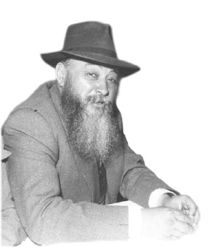

R’ Pinye
Fifty-one years have passed since that Friday, 9 Iyar 5723/1963, when R’ Pinchas Todros (Pinye) Altheus passed away. * He was a Chassid and dynamic askan who was mekushar to the Rebbeim. He one of the founders of Kfar Chabad and was involved in all aspects of the development of Chabad in Eretz Yisroel. * To mark his passing, his relatives and friends held a farbrengen in which they shared memories and stories.

R’ Meizlich: R’ Pinye was born on 4 Kislev 5658/1907 in Nikolayev, Ukraine, a city of Chassidim. At that time, the Pale of Settlement was in force, which forbade Jews from living in big cities unless they were rich or had an important position. There was one wealthy Jew who was allowed to live in Nikolayev, which was located in the Pale. Because of his wealth, he needed many clerks and assistants. Thanks to him, many Jewish families lived in Nikolayev including Chassidic families, among them the grandfather of R’ Pinye.
R’ Pinye went to Yeshivas Tomchei T’mimim in Lubavitch before his bar mitzva. He felt he was a “Nikolayever,” and furthermore, he was from the famous Altheus family. What children his age did not do, he allowed himself to do. But in Lubavitch, they did not only want to teach Torah and Chassidus, but middos and avoda too. The hanhala noticed that he thought highly of himself, as he now and then expressed barbed remarks to his peers and they did not look kindly upon this. One day, the mashgiach told him that he was being thrown out of the yeshiva. R’ Pinye tried to defend himself by saying he had done nothing wrong in recent days, but the mashgiach stood firm and did not want to hear another word.
R’ Pinye realized there was nothing he could do but since his father and grandfather were close to Beis HaRav, he felt comfortable enough to approach the door of the Rebbe Rayatz’s room (at the time, he was the son of the Rebbe and the dean of the yeshiva) and start to cry. Rayatz heard him and came out.
“They expelled me from yeshiva. I didn’t do anything,” said young Pinye.
“Tell the mashgiach to accept you,” said Rayatz.
“I need a letter of agreement to take me back into the yeshiva,” he said.
“If you say it in my name, they will believe you. You would not lie in my name.” So Pinye returned to yeshiva.
Pesach passed and it was a new z’man. The young talmidim went up a grade but the mashgiach told him, “You will remain where you were.” Pinye refused to accept this and entered the new class where he learned with his previous classmates, but the maggid shiur told him to leave. He left in embarrassment and went to the main hall of the yeshiva where he began to learn by himself. The mashgiach who saw this asked him to return to the class he had been in the previous year, but he refused.
“Your father, R’ Binyamin, will come for Shavuos and will take you from here,” said the mashgiach, but Pinye wasn’t frightened. He was sure that his father would advocate on his behalf.
His father came for Shavuos and when he heard what his son had to say, he told him to obey the mashgiach and to go down a class. “Otherwise, you will come back with me to Nikolayev,” he warned. Pinye humbly entered the class.
After a day or two, the mashgiach told him to go up a class. Pinye immediately ran to his father and complained, “What do they want from me? First they told me to stay where I was and when I complied, they promoted me?”
Said his father, “You are from Nikolayev, and you already have feelings of grandeur at such an age. You need to be put in your place. If you continue to go in the way you are being educated, you will grow up as a Chassid ought to be.”
YOU WILL BE WITH ME
Binyamin Altheus: My father was the gabbai at the minyan at the Rebbe Rayatz’s house in Leningrad. When R’ Chonye Morosov, the Rebbe’s secretary, was not in town, my father would take over for him. The Rebbe Rayatz would say it was a pleasure to work with my father.
My father had many assignments from the Rebbe Rayatz, particularly through the Joint. He had a special relationship with Professor Maggid of Vienna. My father was also friends of the director of the Joint in Russia, Dr. Rosen (his underground code name was Shoshana).
During the arrest of the Rebbe Rayatz, my father would sit all day in the Rebbe’s home. On 12 Tammuz, when the Rebbe was released, the Rebbetzin called and told my father the news. My father and other Chassidim who were in the house danced. They continued dancing all night. My mother sat at home and worried. She thought that surely he had been arrested too, since in those days, when a person was missing for a number of hours, it was assumed he was arrested.
Toward morning, my father sent someone to inform my mother that he was in the Rebbe’s house. The person knocked at the window and my mother was even more frightened. This fear remained with her all her life.
After the Rebbe’s release, he lived in Malachovka. Already then, it was clear that after the Yomim Tovim the Rebbe would leave for Riga. My father was there with the Rebbe; one time, on the way back from the mikva, my father asked, “What will be with us, the Chassidim, with the Rebbe leaving Russia?”
The Rebbe answered, “I thought about my leaving Russia in great detail. Just as Hashem conducts Himself with me above the natural way, so too, He will conduct Himself with my people. May Hashem help and we will see one another again.”
Indeed, my father spent the Yomim Nora’im of 5710 with the Rebbe Rayatz.
When the Rebbe left for Riga, many Chassidim went to the train station to part from him, but only a few were allowed to board the train. My father was one of them. My father saw the Rebbe write a letter to the Chassidim. The Rebbe said to him, “I am writing the letter with my heart and from my heart.”
My father was moved and said, “The Rebbe has Chassidim who are big maskilim in Chassidus; there are those who daven at length. My entire existence is about being around the Rebbe.” The Rebbe responded, “I will truly miss you.”
R’ Meizlich: There is another version to this story. At R’ Pinye’s funeral, the mashpia R’ Shlomo Chaim Kesselman said: R’ Pinye went to the Rebbe and said, now the Rebbe is leaving. There are Chassidim who are maskilim – they will delve into Chassidus and take pleasure in that; there are Chassidim who are ovdim – they will find solace in their davening, but I am neither a maskil nor an oved. The only thing is that I spend time in the Rebbe’s presence. To this the Rebbe responded, “imi b’mechitzasi (with me in my compartment).”
THE PRESIDENT OF RUSSIA AND R’ PINYE MEET
Mrs. Yehudis Bialer: About our house in Leningrad: in the 1930’s, there were no private homes. Everything belonged to the government. Our apartment was in a large house that had belonged to one of the nobles, with the house divided for eight families. In the center of the house was a big hall with a carved ceiling and it was divided among four or five families.
In our room was a machine to knit socks, work which did not entail desecrating Shabbos. My father was in charge of a worker’s cooperative and the members of the group received raw materials from the Joint so they could manufacture goods at home and keep Shabbos.
One of the things that characterized my father was his activities on behalf of the Jews of Leningrad. One of the scenes which I remember is when the wife of R’ Karasik came and sat on the floor and wept. She asked my father to see to it that her husband be freed. My father tried and was successful in helping with this.
In 1936, we made aliya. I myself did not know we were leaving Russia until the day we left.
R’ Meizlich: According to what I heard, Dr. Rosen said to R’ Pinye one day, “They are asking about you,” referring to the NKVD. He immediately submitted a request for visas. He tried to hide where he lived so they could not make inquiries about him and this is why he told them he lives in Moscow.
He actually went to Moscow where he took a trolley. Suddenly, he saw a gathering on the street which was unusual. He asked one of the people what this was about and the man told him that Kalinin was there, referring to the president of the Soviet Union. In those days, it was known that whoever found favor in Kalinin’s eyes would be helped by him. Pinye jumped off the trolley and ran to where the crowd was gathered. When it was his turn, he presented his case and Kalinin granted him a visa on the spot.
He arrived in Eretz Yisroel in 5697.
HE PUT CHABAD
ON THE MAP
R’ Meizlich: R’ Pinye arrived in Eretz Yisroel with nothing. I heard that he worked in construction and there was a period of time when he and R’ Folye Kahn collected old clothes and sold them. They once found two liras and this supported them for several weeks.
Yehudis Bialer: We arrived in Eretz Yisroel on November 1, 1936 – 16 Cheshvan.
R’ Meizlich: You arrived by ship in Haifa and from there you went to Rechovot and from there to Tel Aviv.
Several years later, in 5701, the Rebbe Rayatz founded Agudas Chassidei Chabad in Eretz Yisroel. In 5704, the Rebbe wrote about including new people, and R’ Pinye was appointed as secretary. That is how his activism began. But even greater work began after 1948.
Binyamin Altheus: His shul in Tel Aviv was on 25 Montefiore Street and then moved to Nachalat Binyamin. Nachalat Binyamin is where the first Yud-Tes Kislev farbrengen took place. Shazar and other dignitaries came. On 12 Tammuz they made a farbrengen in the courtyard of the shul and many people came. On the Yud-Tes Kislev of the following year, they rented the Laborers Center where the farbrengen took place. An article appeared about it in the Leftist newspaper Davar and we children considered this a big deal.
My father’s work in those days can be summed up as follows: he put Chabad on the map nationally.
R’ Meizlich: The Rebbe called him “mara d’ara d’Yisroel” (lit. master of Eretz Yisroel).
LOBBYING ABILITY
Shmuel Avidor: I was living at the time on Rechov Rashi, corner of King George in Tel Aviv. Pinye lived higher up on King George, somewhat close to Allenby. I had a soft spot for handsome, impressive Jews. One day, I saw a Jew on the street with a dark beard mixed with a bit of white, wearing a hat bent forward; in the summer he went about with a shirt and no jacket and he walked in all his glory. I asked who is that man and was told, that’s Chabad.
I had some knowledge of Chabad through R’ Moshe Ashkenazi. We were neighbors. R’ Pinye asked me to come on Shavuos night to shul in Nachalat Binyamin. I went and they all looked at me and whispered, “Who is that?”
I suddenly saw the handsome man who was always walking down the street in front of me. He held out his hand and said, ‘Oh! Shalom aleichem! It’s good you’re here.” His outstretched hand remained grasped in mine until the last Friday of his life.
All those years, I had the privilege and the ability to stand by his side in various projects and activities. First, thanks to him there were those Jews I helped when I worked in the aliya department of the Jewish Agency. R’ Pinye discovered that I have connections in the Defense Ministry with Yitzchok Navon. Some Lubavitchers wanted to leave the country to go to the Rebbe, like R’ Gershon Mendel Garelik and R’ Itche Springer. I don’t remember all the names now. He came to my office and said, “You’ve got to do this.”
I told him, “I have connections in the Jewish Agency, but in the Defense Ministry?”
R’ Pinye said, “If you want it, they will release them.” They had to sign a guarantee that they would return. R’ Pinye signed that they would return and they let them leave. They did not return, of course.
His connections with numerous people are known. Surely residents of Kfar Chabad remember the many visits, like the visit of all the members of the Working Committee of the Jewish Agency, and others.
R’ Pinye had a certain mischievous way about him. I’ll tell you a story to illustrate this. For a handsome price, R’ Moshke Gurary found himself a Litvishe son-in-law who was a big scholar and came from an illustrious family. One time, he began saying a pilpul and he quoted a Gemara that he said was on Daf 82. R’ Pinye interrupted and said it was daf 84. The misnaged said he thought it was on 82, but R’ Pinye insisted it was on 84. Then the misnaged quoted something from the Gemara in Shabbos on daf 142, and R’ Pinye said, “What?! It’s in the first chapter!” When R’ Pinye recounted this, he said smilingly, “We were in a Chabad shul where there was no Shas so it was impossible to check.”
The next day, the misnaged came to R’ Pinye’s cigarette store on Lilienblum Street with a pile of Gemaras under his arm. He asked for Altheus. He wanted to show he was right. After opening the Gemaras to the right places, R’ Pinye apologized to him and said, “Nu, nu, what can I do. You cannot rely on memory.”
When he related this he said to me, “You can’t let a misnaged get too puffed up.”
Everyone loved him. His face always shone.
I have to thank Mrs. Yehudis Bialer for bringing me this evening. I think about him all the time, especially when I pass King George Street in Tel Aviv.
Many buildings and mosdos in Kfar Chabad were built thanks to him. He was an unusual personality and he loved doing favors for everyone.
ONE OF THE FOUNDERS OF KFAR CHABAD
R’ Meizlich: We will ask Mr. Luba Eliav, who was Levi Eshkol’s right hand man and the head of the Settlement Department of the Jewish Agency, to speak about R’ Pinye’s work on behalf of Kfar Chabad.
Eliav: With the first large waves of aliya after the founding of the State, Prime Minister Ben Gurion gave Levi Eshkol the important job of head of the Settlement Department of the Jewish Agency. It was a very important job and I was his closest personal assistant.
First, tens of thousands of illegal immigrants came who were exiled to Cyprus. Then Jews from Yemen, Iraq, North Africa, Bulgaria, etc. arrived. Eshkol divided the land into sectors, i.e. new areas of settlement. R’ Pinye was one of the first to ask for a parcel of land. He wanted to start a Chabad settlement.
As Shmuel [Avidor] explained, he had a nice appearance; as Eshkol said after some meetings, a sheiner yid. And he did not leave us alone until he got what he wanted. He wanted 100 agricultural units with each house consisting of 84 meters. The usual houses approved for construction were only 62 meters, but he wanted bigger houses, 84 square meters. For each of his requests, Eshkol said there wasn’t enough funding, and he went and got funding from other sources. He never gave up. Thanks to his work, the houses in Kfar Chabad are larger than average.
Shazar is the one who influenced Eshkol along with R’ Pinye. Eshkol did not like this and he said he would manage on his own with R’ Pinye, but Shazar did not let him alone.
Another person who was supportive was the Agricultural Minister at the time, Kaddish Luz. The triumvirate – Shazar, Eshkol and Luz – gave him their full support. R’ Pinye used all his strength and charm and utilized his connections to found Kfar Chabad.
L. Y. HaYerushalmi: First of all, it should be noted that of all the religious people who worked on communal matters, he was one of a kind. In articles that I read, it describes his uncle (R’ Eliyahu Chaim Altheus) as being broad in mind and heart. R’ Pinye was the same way.
He had a special relationship with two elements in the country: the human element and the settlements. He felt close to the human element since he himself was a part of it, having been a construction worker. He particularly related to those who worked with their hands, a group that included the residents of Kfar Chabad at that time. He also had a special regard for the settlements even though he lived in Tel Aviv. His relationship with settlers was unique.
I knew him through my work. Two matchmakers were instrumental in making the connection, Zalman Shazar and Yona Kesseh. Our relationship was strengthened in connection with the founding of Yad HaChamisha.
I had prominent jobs in the labor movement and when the tragedy occurred with the five who were murdered in Kfar Chabad, he came to me with the encouragement of Shazar and Yona Kesseh and said a professional school had to be started. He asked for 18,000 liras for this cause. With that amount of money you could have bought two apartments in Tel Aviv. R’ Pinye asked and we raised 18,000 liras – half from the Working Committee of the Histadrut and half from the Mapai coffers. I must mention that in the entire history of Mapai, this was the only financial contribution that left its coffers for an outside mosad.
I remember that someone tipped off R’ Pinye that Knesset member Avrohom Hertzfeld, who was a member of the Finance Committee, had just concluded a settlement between Egged and Dan and in the budget there remained a reserve of several thousand liras which Hertzfeld could do with as he pleased. We went to Hertzfeld together but he maintained it was hard for him to give the money. But R’ Pinye insisted and in the end, we got a promise that we would get the money within a week.
That is when a relationship developed between the Labor movement and the Rebbe to the extent that when there were debates within Mapai, the Rebbe expressed his view in one way or another. Even during the Lavon Affair, the Rebbe often sent encouragement to the Defense Minister, Pinchas Lavon, through R’ Pinye.
When my son was bar mitzva, R’ Pinye brought lekach and mashke from the Rebbe.
He was a unique individual, a man of bridges and contacts. He left a void that no one has filled. He understood the person with another view; he always tried to draw people close and befriend them. Thanks to him, at the Yud-Tes Kislev farbrengen you would see everyone. They came from all walks of life; they all came, especially all the leading lights of the Labor movement.
R’ Meizlich: There is a letter here of the Rebbe about what HaYerushalmi said, that R’ Pinye left a void. Yosef Dekel wrote to the Rebbe that a void remained after the passing of R’ Pinye and someone should be appointed to replace him. The Rebbe wrote that he is right, but unfortunately it could not be solved by ordering someone to step into the role, because the role had to do with heart and could not be appointed from the outside, only after someone suitable appeared. The Rebbe said he hoped someone would be found soon since it was a vital matter.
DRAWING CLOSE
THOSE NEAR AND FAR
Someone else who knew R’ Pinye from the Chabad perspective and the journalistic perspective was Naftali Krauss:
Krauss: R’ Pinchas Altheus was, more than anything else, a mentch. All other adjectives are superfluous. I am upset that there are no mosdos named for him.
(Someone present mentioned that the central building of Yeshivas Tomchei T’mimim is named for him. R’ Meizlich said that the central shul in Kfar Chabad is also named for him).
I was the last to speak with R’ Pinye, except for family members perhaps.
I was new in Chabad at the time and we had a legal problem regarding the apartment of my late father-in-law. When R’ Pinye heard about it, he volunteered to go to court and testify on our behalf that he knows the family and the inheritance belongs to us.
I called him on Friday and he said that when it was our turn, he would be in court. We waited and waited but he did not come. The judge asked, “Where is your witness?” The sad ending was that he had died.
Another thing I want to say in his praise is that he was mekarev not only those who were far, but also those who were close. I was witness to this. After I married, I davened in Nachalat Binyamin where he davened as well. He wasn’t a big maskil and not a big oved, but he was the embodiment of what it means to be the Rebbe’s representative. I looked at him and saw the shliach of the Rebbe. Today there are thousands of shluchim, and he was the first.
He knew Knesset member Moshe Aram, one of the leading activists of the Left, from the anti-religious branch of the Labor party. R’ Pinye once met him in the Knesset and found out that he was born in Liadi and lived in Tel Aviv. “If you were born in Liadi then you have to come to our shul in Nachalat Binyamin.” This was before Yom Kippur.
Nobody knew about the guest who would be arriving in shul. Three minutes before the start of Kol Nidrei, Moshe Aram showed up with a cap on his head.
R’ Pinye made believe he never met him before and gave him a hearty Shalom Aleichem. “It’s good you came,” he said.
“What do you mean, it’s good I came,” wondered Aram.
By way of response, R’ Pinye opened the machzor to Kol Nidrei and showed him where it says “with the approval of G-d … to allow us to pray with the transgressors.” Then he said, “All the years, we had no transgressors and we just said the words; but now we will all say it wholeheartedly.” Aram appreciated the humor and this broke the ice.
That was in 5720/1960, and Aram went to shul every year from then until the Yom Kippur War in 1973! It was all thanks to R’ Pinye.
One year, Aram tried to buy Maftir Yona. Other congregants competed with him so he wouldn’t buy it. Nobody could imagine having an unobservant person, one who perhaps did not fast, go up for Maftir Yona, but in the end he managed to buy the aliya.
R’ Pinye went over to him quietly and after explaining to him the spiritual qualities of Maftir Yona he asked him to take off the leather shoes he was wearing. We could not believe our eyes. One of the leaders of the Left took off his shoes and went up for Maftir Yona!
The following year, he came wearing rubber shoes. A year later, he brought his grandson and gave him a small machzor. In the years that followed he would come on Yom Kippur and stay from morning till night, for all the t’fillos.
During the Yom Kippur War, he found out during Shacharis that the war had begun. Since he was a Knesset member, he left the shul.
That was the power of R’ Pinye. Aside from him, there was no one at the time who could schlep Moshe Aram to shul.
We are lacking R’ Pinye. If he would be with us, many things in Chabad would look different.
Avidor: There were always guests in his house. I remember the Melaveh Malka meals in particular and the Sheva Brachos for R’ Gafni.
R’ Meizlich: He was an organized person. When he was told a time, it was precisely that time.
There was once a meeting of the vaad of Kfar Chabad in the home of the director, R’ Dovid Bravman. It was called for five and R’ Pinye was on time. I lived in the neighborhood of the Bravman family, so I left the house at the last minute. Within half an hour everyone had arrived and the meeting began. R’ Pinye asked about the delay and each one gave his excuses. R’ Pinye replied, “This is the tradition that I received: the reason is a lie and the excuse is a liar.”
Avidor: He was organized and very clean. His shirt was always ironed.
Yehudis Bialer: Thanks to my mother.
HIS PASSING ON EREV SHABBOS
R’ Meizlich: R’ Shneur Zalman Gafni, who was a mekurav of his, visited R’ Pinye with his wife on Chol HaMoed Pesach 5723. R’ Gafni recounted that before he left, R’ Pinye said, “You can pray for me.”
Said R’ Gafni, “I asked him what happened and he did not want to say. On the 9th of Iyar he passed away.”
R’ Yeruslavsky: On Shvii Shel Pesach there was a special Seudas Moshiach in the Nachalat Binyamin shul. If they hadn’t called for us, we would have sat there all night. They had already brought chometz’dike mashke and we continued farbrenging until midnight.
At this farbrengen, R’ Pinye demanded 10,000 liras of R’ Moshe Gurary for the mosdos. R’ Pinye said to him, “If you give 10,000, I will give 2000.”
In 5722 he raised money in Australia. Until then, he did not take a penny from what he raised, and after that trip he requested pay for the first time in his communal work. The payment was 2000 liras which he then donated because of R’ Moshe Gurary’s donation.
Avidor: R’ Pinye died on a Friday. They took him for burial in Tzfas. They took him by bus; since I am a Kohen, I could not continue with the funeral to Tzfas. Afterward, they told me that they completed the burial as Shabbos began. They said L’chaim for the elevation of his soul and they poured the remnants of the bottle on the freshly turned earth and said, “Say L’chaim, R’ Pinye.” It hadn’t registered that the effervescent man had died.
Berger. "R’ Pinye." Beis Moshiach, no. 925 (May 5, 2014).